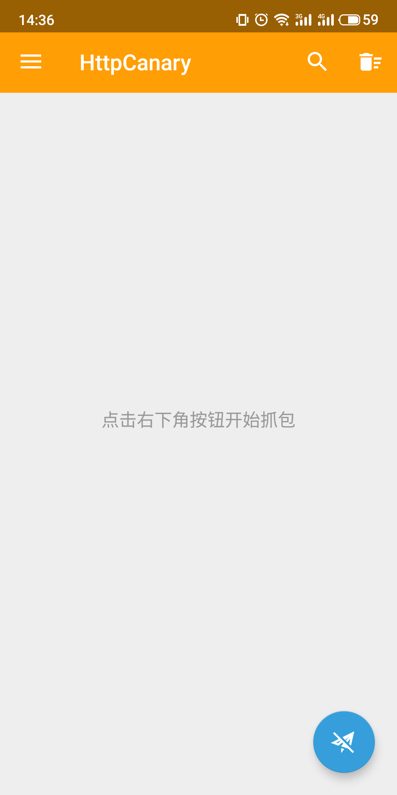
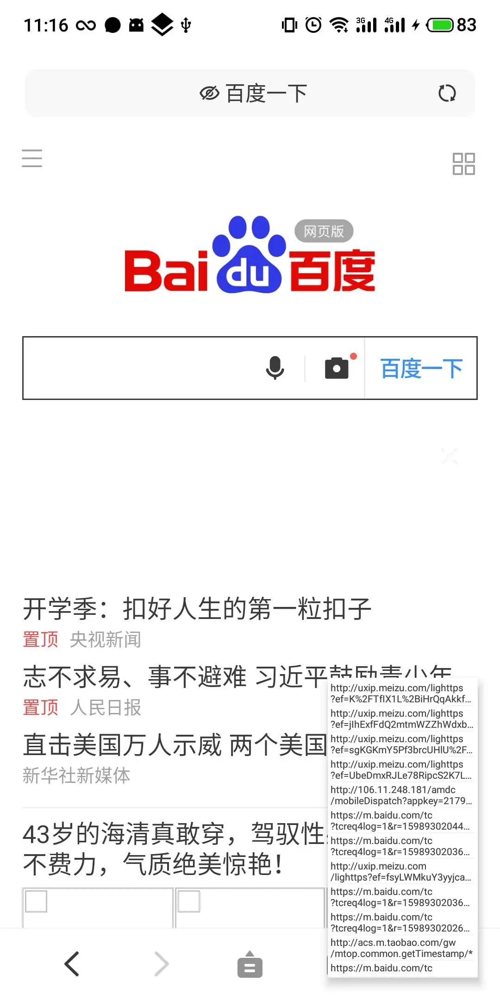

装了 httpCanary 三天，我终于看懂了手机上那些 App 到底在偷偷发什么
一个程序员拿到 httpCanary 之后用了三天的真实体验：从安装证书到绕过 SSL Pinning，聊聊这个 Android 抓包工具到底好用在哪、坑在哪。
一个程序员为什么要装抓包工具
上周在调试公司一个 Android App 的登录接口——用户反馈说有时候登录卡住不动，但日志里什么都没报。我手头没有现成的抓包工具，只能对着代码猜：是请求没发出去？发出去了但响应超时？还是被人中间劫持了？
同事甩给我一个名字：httpCanary。说这玩意儿在 Android 上抓 HTTPS 包方便，不用搞 PC 端代理那一套。
说实话，我之前对 Android 抓包的印象还停留在 Charles + 代理证书那套流程——在 PC 上跑代理，手机配 HTTP 代理，装 CA 证书，折腾半天才发现 Android 7+ 默认不信任用户证书，白忙活。httpCanary官网 号称自己搞 VPN 服务来劫持流量，不用配代理，我就从官方下载拿了安装包，抱着试试看的心态装了。
第一眼：比想象中轻，但证书那关还是踩坑了
打开应用，界面挺干净——顶部一个大大的抓包开关，下面是请求列表。点一下开关，它会弹一个系统 VPN 授权弹窗，确认之后就开始跑了。这就开始抓了？比我预想的快。
但紧接着问题就来了：HTTP 的包能看到，HTTPS 的全是乱码。哦对，还差证书那步。
它的证书安装流程做得还算友好——设置里导出根证书，然后引导你走系统的证书安装界面。但 Android 7+ 那道坎还是绕不过去：很多 App 不信任用户装的证书，就算你装好了 CA，它该加密还是加密。我调试的那个 App 刚好就属于这一类。
查了一圈才搞明白：这个 App 的开发者在 Manifest 里配了 network_security_config，只信任系统预置的证书。我的选择有三个：要么把 httpCanary 的证书刷进系统分区（需要 Root），要么用模拟器（可以改系统镜像），要么试试太极——它能在免 Root 的情况下给 App 打个 Hook 绕过校验。
我手头那台测试机没 Root，最后选了模拟器方案。Android Studio 里开一个带 Writable System Image 的模拟器，adb push 一下证书文件就搞定了，比刷真机省事多了。

过滤功能：太多请求的时候的救命稻草
证书搞定之后重新开抓，瞬间炸了——请求列表刷得飞快，几十上百条，系统服务、广告 SDK、后台推送、App 启动时的网络探测……我要找的那个登录接口淹没在里面，根本翻不过来。
这时候才发现 httpCanary 的过滤功能有多重要。它有三层过滤：目标应用、目标 Host、关键词搜索。按顺序叠起来用：先设目标应用，把那个 App 单独拎出来；如果还嫌多，再加目标 Host，只保留关键的接口域名；再嫌多就加关键词。三层下来，列表瞬间干净了。更多过滤组合的技巧和每个规则的详细说明，去httpCanary文档里翻翻。
我一般是先开抓几秒，看一眼请求列表的来源分布，再决定要不要加过滤。有时候 App 自己的请求里混着第三方 SDK 的流量（比如广告、统计上报），目标应用过滤能把这些一起踢掉，省得一条条翻。
悬浮窗抓包：我最常用的功能
这几天用下来，出现频率最高的功能不是什么注入、重放，是它的悬浮窗抓包。
就是把抓包控制做成一个小气泡，常驻在屏幕上。需要抓的时候点一下开始，抓完点一下暂停，然后直接跳回应用看刚才发了什么。切应用的时候不用再切回 httpCanary，整个流程不打断。
我调试登录接口那事儿就是这么搞定的：模拟器里 App 点登录，悬浮窗里看着请求一条一条过来，找到登录接口那一条，点开看 JSON 请求体和响应——哦，原来是我传的参数格式写错了，服务端返回了一个 400，但客户端没处理这个状态码，直接当超时显示了。

如果要认真分析某个请求，它的详情页做得挺细：Headers、Query、Body、响应状态码、耗时，JSON 还能自动格式化折叠。对比 Charles 的界面，httpCanary 的移动端体验确实好——手指戳屏幕总比在 PC 上配代理方便。
SSL Pinning 是另一个坑
搞完那个 App 之后我还试了试抓微信——结果还是不行。包能抓到，但解密不了，返回的全是乱码。这次不是 Android 系统不信任证书的问题了，是 SSL Pinning。
简单说就是 App 在代码里硬编码了服务器真实证书的指纹，每次建 HTTPS 连接都会验一遍：证书对不对得上。httpCanary 在中间换了证书，指纹肯定不一样，App 直接断连接——不管你系统证书信不信任。
绕过的话，我问了下同事，主流方案是 LSPosed + JustTrustMe 模块，但那台测试机没 Root 用不了。模拟器可以跑 Frida 脚本，但我没折腾过 Frida。最后用太极把微信重打包了一下，在太极里启用 Hook 模块，算是绕过去了——不过微信更新之后得重新走一遍重打包流程，挺麻烦的。
说句实在话，SSL Pinning 是开发者为了保护用户数据加的一层安全机制，但它也确实给调试和安全研究制造了障碍。合法合规地用还行，要是用来搞啥歪门邪道那就另当别论了。
DNS 设置：一个被低估的小功能
还有一个我一开始没注意到、后来发现挺实用的——DNS 服务器配置。httpCanary 默认用系统 DNS，但它内置了 Google、Cloudflare、阿里、114 等公共 DNS，点一下就切过去了。
有次调试一个调用境外接口的功能，运营商 DNS 解析境外域名老超时，把 DNS 改成 1.1.1.1（Cloudflare 的那个）之后瞬间就好了。而且它的 DNS 设置只影响自己的抓包请求，不改全局系统 DNS，其他 App 不受影响，这点做得挺稳。
谁适合用它
如果你是做 Android 开发的，不管是调试自家 App 的网络问题、分析第三方 SDK 的行为、还是做些安全测试，httpCanary 都值得装——尤其是模拟器环境下，证书不用刷系统，过滤、悬浮窗这些细节做得比 PC 端代理工具顺手。
如果你只是好奇手机上的 App 都在偷偷发什么请求，那也可以装来看看——但别指望全 HTTPS 都能解开，大部分大厂 App 要么配了网络安全配置，要么开了 SSL Pinning，能看到明文的主要是 HTTP 和少数没做安全加固的老应用。
至于那些想着用来破解什么东西的……算了吧，现在主流 App 的加密和校验逻辑都挺扎实的，真有那功夫不如学学合法的逆向分析和渗透测试。
这几天用下来最大的感受是：httpCanary 把 Android 上抓包这件事的门槛降了一大截——不用配代理、不用刷 Root、大部分场景模拟器就能搞定。但证书那道坎还是绕不开，尤其是 Android 7+ 的系统级限制和 App 层面的 SSL Pinning，该踩的坑还是得踩一遍才明白怎么绕。
这篇文章里用到的过滤、DNS 配置、SSL Pinning 绕过等功能的详细说明，我整理的资料在 GitHub、Gitee 和 GitCode 三个仓库里都能拿到。